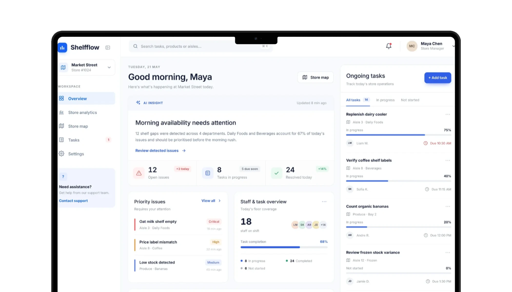
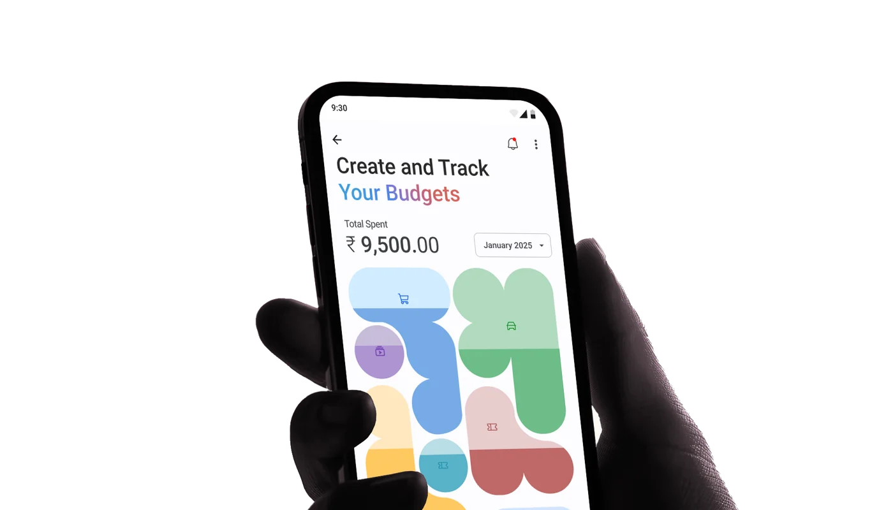
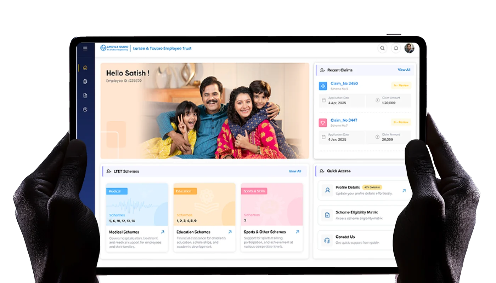
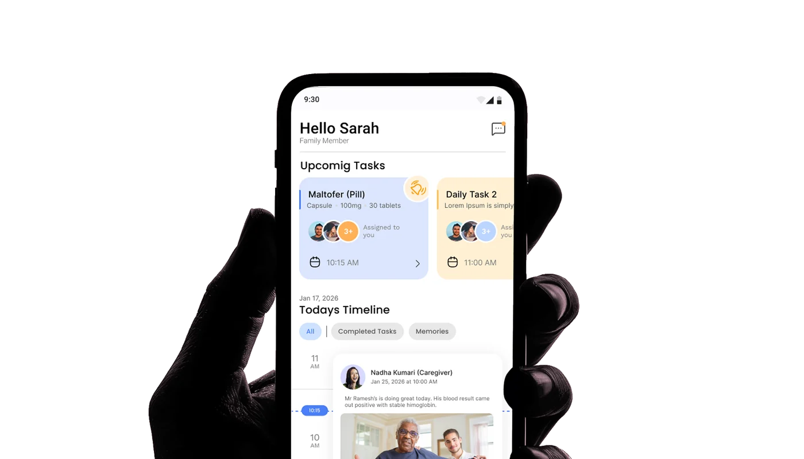

Featured projects
-
ShelfFlow: Intelligent Retail Operations
A retail operations system that helps store teams monitor shelf conditions, prioritize stock issues, and route actionable alerts to the right people using real-time shelf intelligence.
Opens the ShelfFlow case study.

-
Budgeting companion for UPI users
The app sorts UPI spending into categories and tracks savings goals.
Opens the case study on Notion in a new tab.

-
Simplifying Employee Benefits at Scale
Designed employee benefits experiences for a large enterprise, simplifying access to welfare schemes and claims for active and retired employees.
Opens the case study. Shared under NDA.

-
Dementia & Alzheimer's care app
A shared care platform that connects families and caregivers to coordinate daily routines and ensure continuity of care.
Opens the case study on Figma in a new tab.
